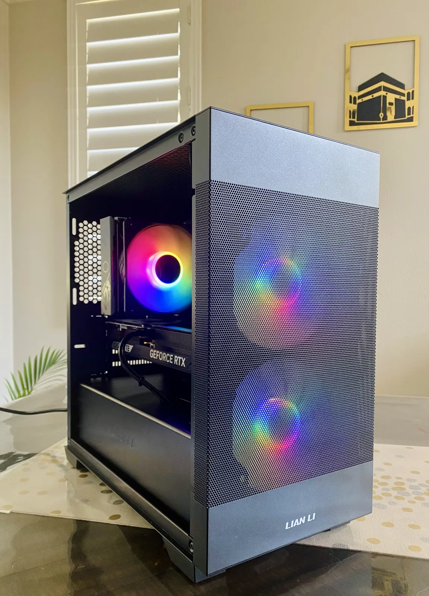
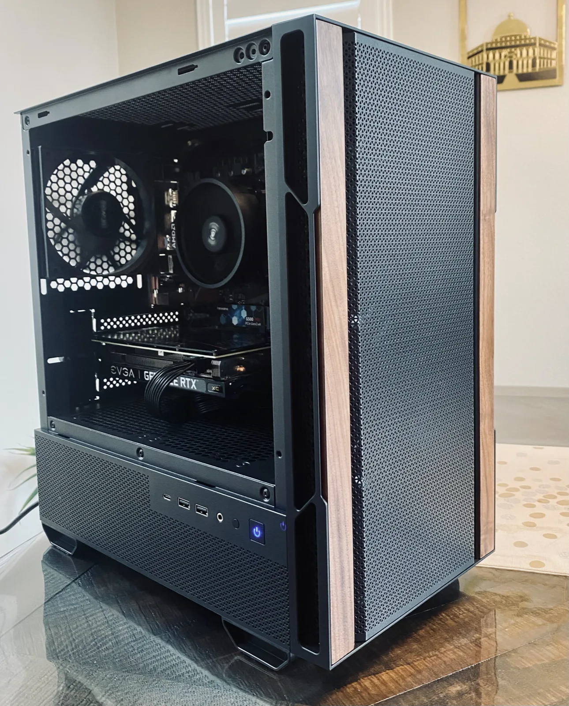
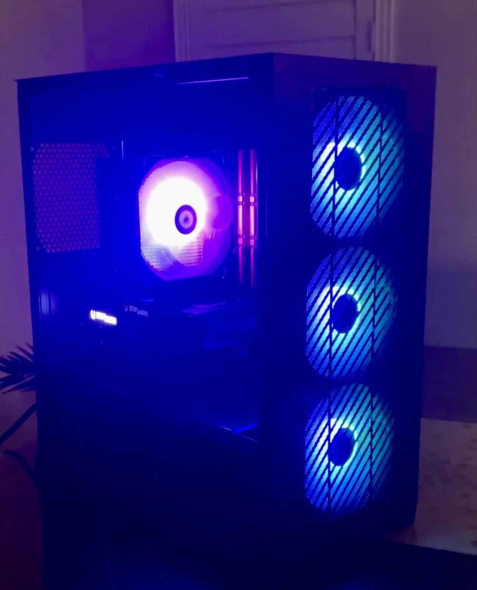
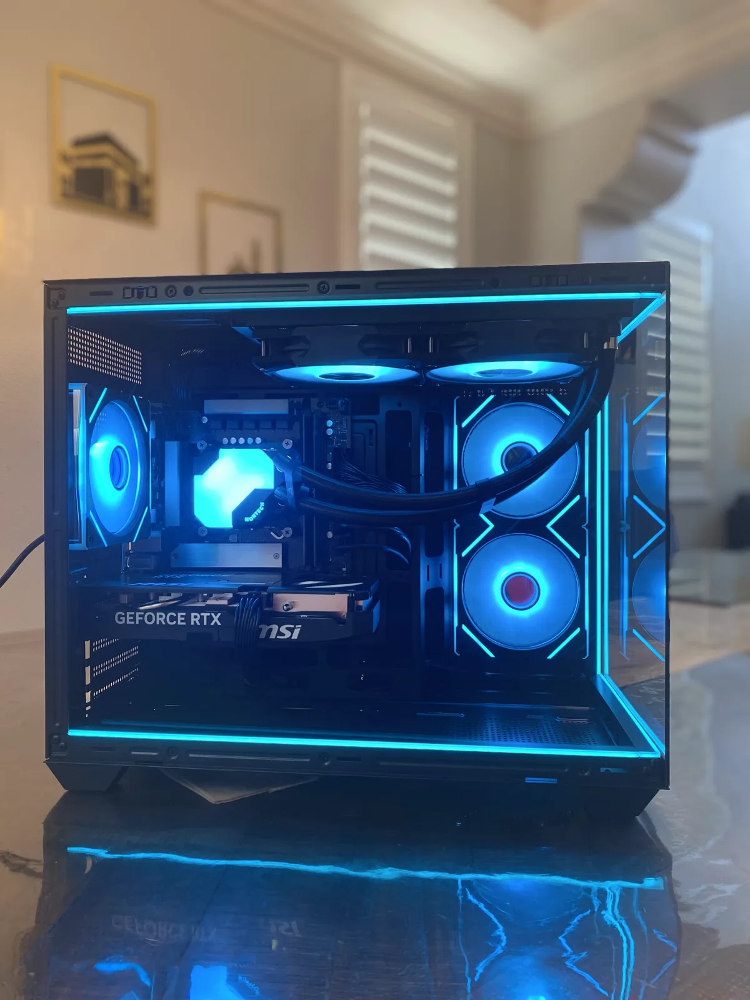
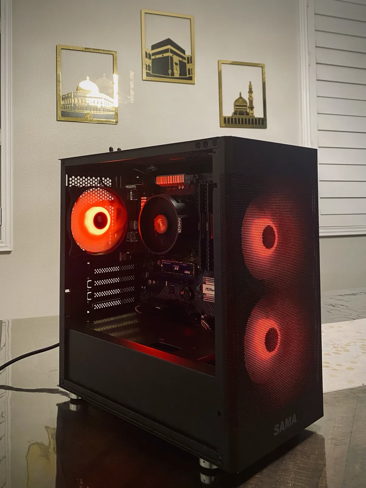

Don’t get a computer,
get the computer
Custom PC builds, repairs, upgrades, and maintenance in Orange County and surrounding areas.
Custom builds start at $700

What we do
-
Custom PC builds
Quoted to your requirements and budget. No fixed tiers.
-
Repairs
Diagnosis, then a quote before any work starts.
-
Upgrades
Add or swap parts in a machine you already own.
-
Maintenance plans
Ongoing cleaning, servicing, and software upkeep.
Workshops
-
Build Your Own PC
Hands-on. You build the machine yourself.
-
Cybersecurity Awareness
Practical security for people who aren't engineers.
What sets us apart
Us
A boxed prebuilt
No proprietary parts
Standard sizes and connectors.
Proprietary sizes
No bloatware
Nothing you didn’t ask for.
Sky’s the limit
Custom aesthetics
You pick the case and the lighting.
One size fits all
Quality Control
Individually inspected and tested.
Batch tested
Our previous systems




Tell us what you need
A few questions. We quote from there.
Zayd’s Custom PCs · Orange County
Request received
Or skip the form